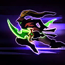

Valeera
Welcome to our Valeera guide for Heroes of the Storm. Here you will learn everything you need to know in order to play Valeera in a competitive environment, whether you play on your own or with a team.
Energy Build
| Level 1 | Level 4 | Level 7 | Level 10 | Level 13 | Level 16 | Level 20 |
|---|---|---|---|---|---|---|
 |
 |  |
The Energy Build is comprised of Talents that focus on maximizing Valeera's Energy efficiency in battle. Vigor Icon Vigor plays a primary role in this build by not only increasing Valeera's passive Energy regeneration, but by also increasing her Energy cap. This will allow Valeera to get off more ability combos more regularly, ultimately increasing her staying power in skirmishes and teamfights. The reduction in Energy cost of Sinister Strike Icon Sinister Strike through Relentless Strikes Icon Relentless Strikes also vastly improves her mobility and allows her to more easily stick to enemies attempting to kite her without chewing too heavily into her Energy reserves.
Garrote Build
| Level 1 | Level 4 | Level 7 | Level 10 | Level 13 | Level 16 | Level 20 |
|---|---|---|---|---|---|---|
|
The Garrote Build is primarily focused on the interaction between Hemorrhage Icon Hemorrhage and Rupture Icon Rupture. Once Rupture has been applied to a target, Basic Attacks will refresh the damage-over-time portion of Garrote, which in turn gives Valeera a consistant 25% increase in Basic Attack damage provided by Hemorrhage. This build should only be used under specific conditions, as it can be easily counter by Heroes who are able to effectively kite Valeera or have abilities which may Blind Valeera rendering her Basic Attacks completly useless.
Sinister Strike Build
| Level 1 | Level 4 | Level 7 | Level 10 | Level 13 | Level 16 | Level 20 |
|---|---|---|---|---|---|---|
|
As the name implies, the Sinister Strike Build focuses on talents that cause Sinister Strike Icon Sinister Strike to become one of Valeera's primary sources of burst damage. Relentless Strikes Icon Relentless Strikes will allow Valeera to cast Sinister strike more regularly and Mutilate Icon Mutilate will vastly increase Sinister Strike's overall damage. When Seal Fate Icon Seal Fate is used in conjunction with Mutilate, Valeera will be able to deal a very large amount of instantaneous burst damage when leaping onto a target effected by a silence, root, or stun (which conveniently can be provided through Cheap Shot Icon Cheap Shot or Garrote Icon Garrote).
Vanish Build
| Level 1 | Level 4 | Level 7 | Level 10 | Level 13 | Level 16 | Level 20 |
|---|---|---|---|---|---|---|
|
The Vanish Build emphasizes Talents that revolve primarily around Valeera's Vanish Icon Vanish mechanic. Subtlety Icon Subtlety provides quick Energy regeneration after casting an opener while Initiative Icon Initiative generates a nice additional Combo Point. At Level 20, Nightslayer Icon Nightslayer gives the most value to the Vanish Build as Valeera will be able to more regularly benefit from popping in and out of Stealth. This means she will be able to cast her openers (as well as generate Combo Points from Initiative and sometimes the Energy from Subtlety) much more often.
Go Back